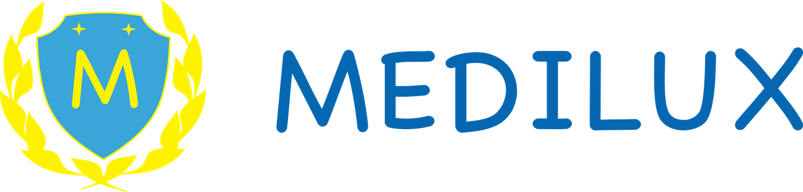
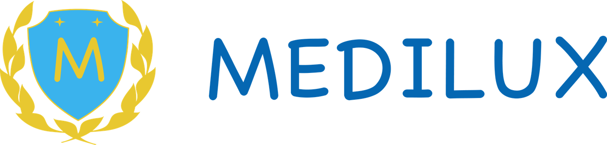

Ihr bisheriges Logo auf der neuen Website: sechs Varianten
Sie möchten das Logo von medilux.info auch auf der neuen Website. Unser Designer hat es dafür in drei Ausführungen vorbereitet, jede in zwei Schriften. Unten sehen Sie alle sechs auf Weiß und auf dem großen Bild, dann im Kopf der Website auf dem Handy und am Computer. Am Ende nennen Sie uns einfach eine Nummer.
- Alle Varianten ansehen
- Auf dem Handy
- Am Computer
Alle sechs Varianten
Jede Variante sehen Sie zweimal: groß auf Weiß und darunter auf dem großen Bild, mit dem jede Seite der Website beginnt. Links jeweils die Schrift wie bisher auf medilux.info, rechts eine weichere, runde Schrift.
Ohne Hintergrund, Kranz in Gelb wie bisherVarianten 1 und 2

Ohne Hintergrund, Kranz in Gold wie heute auf der neuen WebsiteVarianten 3 und 4

Mit blauem Hintergrund, wie auf medilux.infoVarianten 5 und 6
So wirkt Ihre Variante auf dem Handy
Scrollen Sie in der Handy-Vorschau nach unten. Oben steht das Logo auf dem großen Bild. Sobald Sie scrollen, wird der Kopf weiß und bleibt stehen.
Variante
Im weißen Kopf beim Scrollen
Mit «Logo heute» sehen Sie zum Vergleich das Logo, das jetzt auf der Website steht. «Nur das Zeichen» heißt: Kranz mit Wappen und M, ohne den Schriftzug. Der Kopf wird dadurch kleiner und verdeckt weniger vom Text.
MEDILUX bietet Senioren ein Zuhause mit liebevoller Pflege rund um die Uhr und Angehörigen die Sicherheit einer verlässlichen Versorgung – als Alternative zum Pflegeheim, an zwei Standorten in Berlin.
Villa Lindenthal
Familiär leben in einem stilvollen Haus mit Garten in Zehlendorf.Residenz Heerstraße
Pflege-WG und betreute Wohnungen in einem modernen Neubau in Spandau.Für wen?
Für Senioren, für Angehörige und für Sozialdienste, Berufsbetreuer, Ärzte und Pflegeberater.Kosten
Was ein Platz kostet und wer die Kosten trägt, rechnen Sie mit dem Kostenrechner auf der Seite «Kosten» aus.(Vorschau – Texte gekürzt von der Startseite)
So wirkt Ihre Variante am Computer
Am Computer ist im Kopf mehr Platz. Oben sehen Sie den Kopf auf dem großen Bild, darunter den weißen Kopf nach dem Scrollen. Gezeigt wird die Variante, die Sie in Schritt 2 gewählt haben: Variante 1.
Unsere Empfehlung
Auf der Website liest sich das heutige Logo am besten: Es ist für das große Bild gemacht, mit dem jede Seite beginnt. Vergleichen Sie es in der Handy-Vorschau mit dem Knopf «Logo heute».
Wenn Ihnen das bisherige Logo wichtig ist, zum Beispiel damit Berlin und medilux.info gleich aussehen, empfehlen wir Variante 5 und beim Scrollen nur das Zeichen. Das Zeichen auf dem blauen Hintergrund bleibt auf dem Bild und auf Weiß gut zu erkennen, und die Schrift ist dieselbe wie auf medilux.info.
Ihre Auswahl
Schreiben Sie uns einfach die Nummer Ihres Favoriten, per WhatsApp oder E-Mail, oder «Logo heute», wenn alles so bleiben soll. Wenn Sie mögen, sagen Sie uns dazu, ob im weißen Kopf beim Scrollen das ganze Logo stehen soll oder nur das Zeichen.
Beispiel: «Variante 3, beim Scrollen nur das Zeichen»